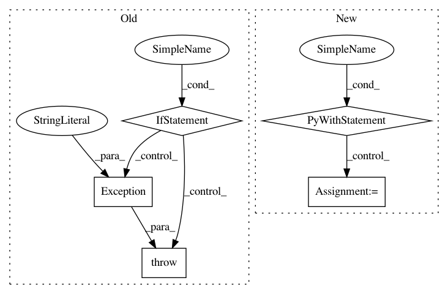

f10c60eb403c8256c7bdde1a8b3df3a33e070070,tests/attacks/utils.py,,backend_test_classifier_type_check_fail,#Any#Any#Any#,130
Before Change
if len(classifier_expected_list) > 0:
// Testing additional types of classifiers expected
if classifier is None:
if (
LossGradientsMixin in classifier_expected_list
or ClassGradientsMixin in classifier_expected_list
or NeuralNetworkMixin in classifier_expected_list
):
// Use a test classifier not providing gradients required by white-box attack
classifier = ScikitlearnDecisionTreeClassifier(model=DecisionTreeClassifier())
else:
raise Exception(
"a test classifier must be provided if classifiers other than "
"ClassifierGradients and ClassifierNeuralNetwork are expected"
)
_backend_test_classifier_list_type_check_fail(attack, classifier, classifier_expected_list)
def _backend_test_classifier_list_type_check_fail(attack, classifier, classifier_expected_list):
After Change
classifier = ClassifierNoAPI
with pytest.raises(EstimatorError) as exception:
_ = attack(classifier)
for classifier_expected in classifier_expected_list:
assert classifier_expected in exception.value.class_expected_list
In pattern: SUPERPATTERN
Frequency: 3
Non-data size: 5
Instances
Project Name: IBM/adversarial-robustness-toolbox
Commit Name: f10c60eb403c8256c7bdde1a8b3df3a33e070070
Time: 2020-04-11
Author: beat.buesser@ie.ibm.com
File Name: tests/attacks/utils.py
Class Name:
Method Name: backend_test_classifier_type_check_fail
Project Name: tensorlayer/tensorlayer
Commit Name: b2e6cccd53bd6c076c32421b8c4d562a96437524
Time: 2018-03-10
Author: dhsig552@163.com
File Name: tensorlayer/layers/normalization.py
Class Name: LayerNormLayer
Method Name: __init__
Project Name: ray-project/ray
Commit Name: 1d532d1cb8b829bdf7055a22c206032ca0b72e46
Time: 2020-04-02
Author: rkooo567@gmail.com
File Name: python/ray/tests/test_webui.py
Class Name:
Method Name: test_get_webui